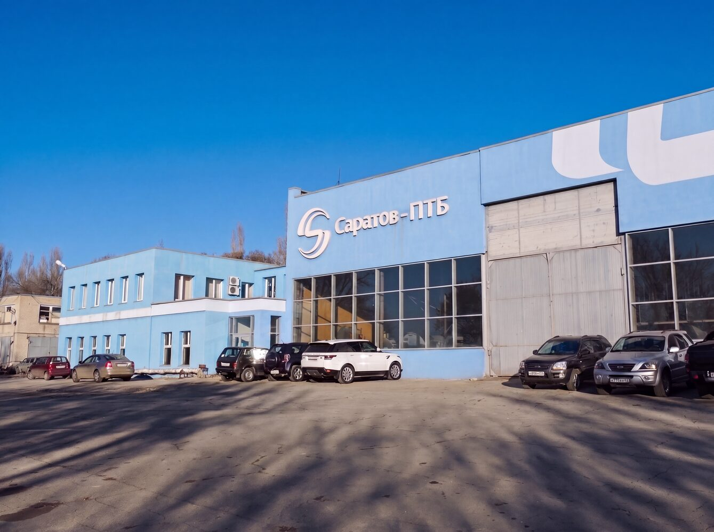
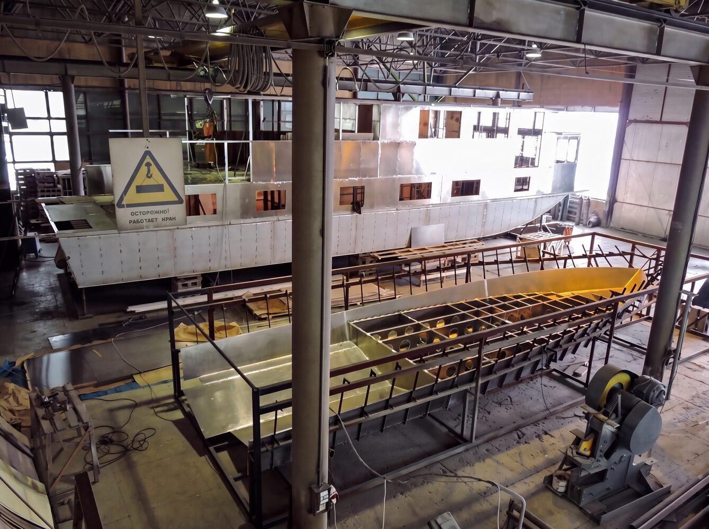
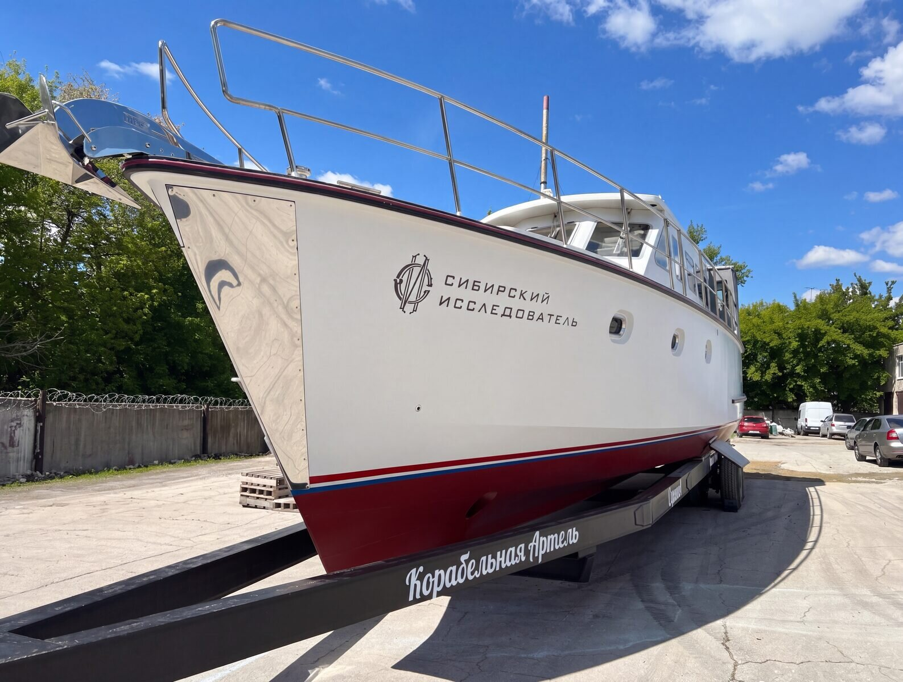
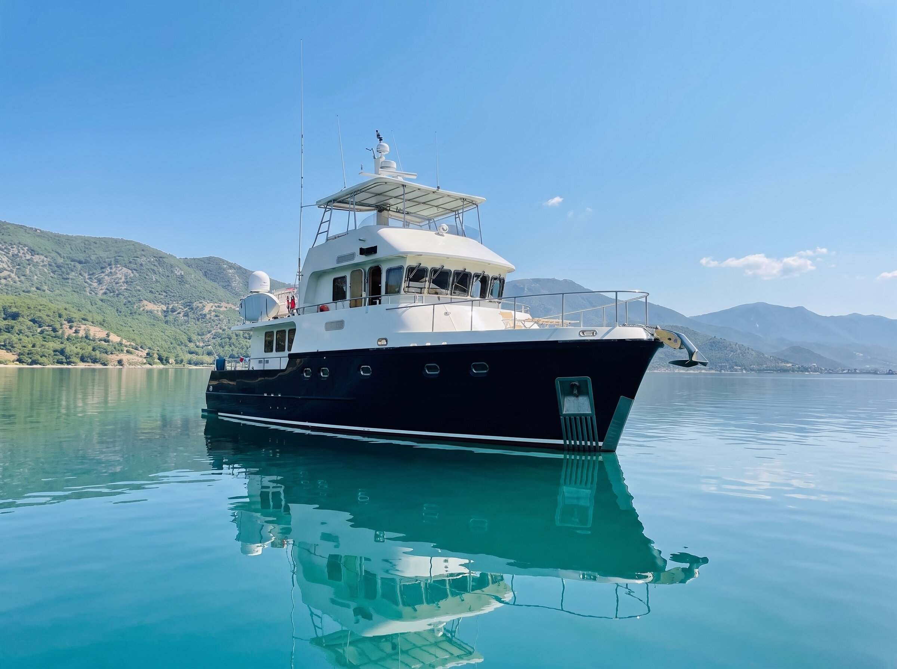

С 1992 года мы проектируем и строим корабли в Саратове. Свои проекты, российские материалы, свои мастера.
Глиссирующие катера от 37 до 44 футов. Среди владельцев — МЧС Казахстана и Служба спасения Саратова.
«Сибирский исследователь» водит круизы по Сибири. По его мотивам построен большой хаусбот — гражданская версия экспедиционного судна.
Маломерные суда класса люкс, оборудованные для семьи и дальних путешествий.



С 1992 года на берегу Волги в Саратове наша верфь создаёт уникальные суда — от исследовательских кораблей до скоростных катеров. За более чем тридцать лет мы реализовали десятки проектов, каждый из которых несёт в себе нашу преданность ремеслу.
Материалы мы подбираем под каждое судно: авиационный алюминий — для катеров T-Rex и экспедиционных судов, судостроительную сталь — для водоизмещающих яхт, дуб российского производства и тик от лучших мировых поставщиков — в отделке. Оборудование — от ведущих производителей, чтобы каждое судно соответствовало высочайшим стандартам качества.
Наш стратегический партнёр — Русское географическое общество, для которого мы построили «Сибирский исследователь».
5 типов судов, 30 построенных.
Среди клиентов — РГО, МЧС Казахстана и Служба спасения Саратовской области.

Только металлические корпуса — и никакого пластика.
Все наши суда — цельнометаллические. Авиационный алюминий на катерах T-Rex и экспедиционных судах, судостроительная сталь на водоизмещающих яхтах. Металл не боится коррозии, держит удар и служит десятилетиями — в отличие от пластика, который со временем стареет и трескается. Обводы корпуса мы проектируем под задачу каждого судна: усиленный киль для мелководья, круглоскулый корпус — для большой воды.
Защита от непогоды, тишина на борту.
Наши суда рассчитаны на долгие переходы в любую погоду: высокий борт укрывает от ветра и волн, а термоизоляция и отопление держат тепло даже в межсезонье. Спальные каюты, как правило, расположены на нижней палубе — вдали от шума. На новых судах фальшборт поднят до 300 мм, а иллюминаторы убраны за него для дополнительной защиты. У водоизмещающих яхт борт в носу доходит до 2,15 метра, а корпус разделён пятью переборками, три из которых водонепроницаемые. Экспедиционные суда получают полный комплекс безопасности — автоматическое пожаротушение на 2 стационарных и 6 ручных модулей, трюмные осушительные помпы и леер по всему периметру палубы.
Своя энергия и климат в любых условиях.
Наши суда рассчитаны на автономность: собственная энергия и независимый климат позволяют подолгу не зависеть от берега. Отопление и кондиционирование работают раздельно — тепло в межсезонье и прохлада в жару в любой момент. На катерах T-Rex солнечная батарея на 360 Вт подпитывает борт, жидкостное отопление с четырьмя радиаторами греет тихо и равномерно, а кондиционер на 37 000 BTU держит климат даже в сильную жару. На крупных судах — собственные генераторы и увеличенные запасы: до 5 тонн топлива и 1800 литров воды для полностью автономного плавания.
Только судовое оборудование мировых марок.
На борт мы ставим лишь проверенное оборудование от известных мировых производителей — Vetus, Osculati, Maritim, Mastervolt, Victron Energy, BlueSea, Webasto, Eberspächer, Dometic, Lewmar, Quick и других. Каждый компонент выбран так, чтобы гарантировать качество и надёжность на годы вперёд.
От Золотого кольца до просторов Сибири.
Катер рассчитан на длительные автономные путешествия — по рекам Золотого кольца или по большой воде Сибири. Три каюты вмещают до 12 человек, а продуманная планировка одинаково подходит для корпоративных выходов, семейного отдыха и рыбалки с друзьями. Один катер — под любые задачи на воде.
Мы строим из авиационного алюминия (сплав АМГ5М) и не работаем с пластиком. Алюминий не боится коррозии, держит удар и служит десятилетиями.
Да. Большинство наших судов — штучные проекты. Мы обсуждаем задачи, планировку и оснащение и строим судно под них.
Сроки зависят от проекта и комплектации. Точные сроки мы называем после согласования технического задания.
Только судовое оборудование мировых марок — Vetus, Victron Energy, Webasto, Eberspächer, Dometic, Lewmar и других.
В Саратове, на берегу Волги. Мы будем рады показать производство — приезжайте на верфь.
Да. Мы остаёмся на связи, консультируем по эксплуатации и помогаем с обслуживанием.
Корабельная Артель и Kartel Boats — одна компания. Верфь строит суда, а Kartel Boats отвечает за продажи. Готовые катера, корабли и экспедиционные суда можно выбрать и купить на сайте Kartel Boats.
Перейти на Kartel Boats